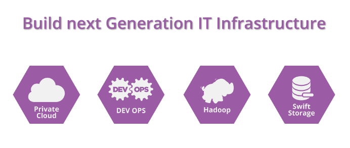

SOLUTIONS
ENTERPRISE PLATFORM DEVELOPMENT AND FULL STACK SOLUTIONS HARNESSING BIGDATA AND CLOUD.
RayCare is a Connected HealthCare Escort; an Integrated HealthCare Platform Starting From Connecting Doctors, Labs, Medicine, Dietitians and Get Healthy Life Tips to Creation of Health Profile, Medical Reports, Daily Health Tracking to Predictive Diagnostic Analytics and Second Option Consultation & Recommendations.
The human body is an amazing design; and most complex. The more you know about how your body works, the better you can take care of it. RayCare bring you, a tool in your hand to connect to the experts. We are Growing Faster to Provide access to Basic HealthCare Facilities to Masses Initially Available in Chandigarh & Ludhiana from 10 AM to 7 PM Find out doctors in your locality; available on RayCare.
Keep your health reports in cloud; analyze your test results and get better insights on your health status. Store, manage and retrieve your health data from any device on the internet. RayCare profiler provides you health insights to better understand your health parameters affecting individual organs.
Know more about RayCare >We already provide multiple solutions to build your entire infrastructure in the cloud: Development and production VMs, object storage, block storage. You can build all of these things and, at the same time, take your projects further by using the OpenStack community.
With our managed services you stay ahead of the competition by focusing on delivering services continuously. Setting up, managing and monitoring in-house infrastructure can be a tedious job. We make it easy for you by providing a catalog of customizable multivendor IT infrastructure.
Know more about Cloud Factory >Akira Analytics Toolkit is a simple environment for data scientists to focus on analytics keeping them above the abstraction of the underlying eco-system. Data scientists can easily iterate through the end-to-end analytics workflow in a single program, using a familiar programming language.
The in-memory stream processing technology and advanced analytic capabilities in Akira platform to helps you deliver real-time insights. Deploy applications that process massive amounts of events in real time, allowing you to act in real-time on events as they happen. To leverage Big Data; text analytics is a necessary tool. You need text analytics to create order from chaos of unstructured data.
Automate analytical model building, using algorithms that iteratively learn from your data, Akira allows computers to find hidden insights. Predict the future, anticipate change, and nurture agility that boost your bottom line. With Akira you can create predictive models.
Know more about Akira Analytics >